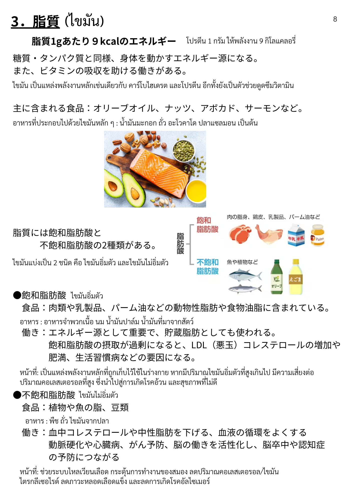

| 漢字 | ひらがな | ความหมาย (ไทย) |
|---|---|---|
| 脂質 | ししつ | ไขมัน / ลิปิด |
| 糖質 | とうしつ | คาร์โบไฮเดรต |
| タンパク質 | たんぱくしつ | โปรตีน |
| 同様 | どうよう | เช่นเดียวกัน / เหมือนกัน |
| 身体 | からだ | ร่างกาย |
| 動かす | うごかす | ทำให้เคลื่อนไหว / ขับเคลื่อน |
| エネルギー源 | えねるぎーげん | แหล่งพลังงาน |
| 吸収 | きゅうしゅう | การดูดซึม |
| 助ける | たすける | ช่วย / สนับสนุน |
| 働き | はたらき | การทำงาน / บทบาท |
| 漢字 | ひらがな | ความหมาย (ไทย) |
|---|---|---|
| 飽和脂肪酸 | ほうわしぼうさん | กรดไขมันอิ่มตัว |
| 不飽和脂肪酸 | ふほうわしぼうさん | กรดไขมันไม่อิ่มตัว |
| 種類 | しゅるい | ชนิด / ประเภท |
| 動物性脂肪 | どうぶつせいしぼう | ไขมันจากสัตว์ |
| 植物性 | しょくぶつせい | จากพืช |
| 食物油脂 | しょくもつゆし | น้ำมัน/ไขมันในอาหาร |
| 中性脂肪 | ちゅうせいしぼう | ไตรกลีเซอไรด์ |
| コレステロール | これすてろーる | คอเลสเตอรอล |
| 漢字 | ひらがな | ความหมาย (ไทย) |
|---|---|---|
| 食品 | しょくひん | อาหาร |
| 含まれる | ふくまれる | มีอยู่ใน / ประกอบด้วย |
| オリーブオイル | おりーぶおいる | น้ำมันมะกอก |
| ナッツ | なっつ | ถั่ว (อัลมอนด์ ฯลฯ) |
| アボカド | あぼかど | อะโวคาโด |
| サーモン | さーもん | แซลมอน |
| 肉類 | にくるい | เนื้อสัตว์ (ประเภทเนื้อ) |
| 乳製品 | にゅうせいひん | ผลิตภัณฑ์จากนม |
| バーム油 | ばーむゆ | น้ำมันปาล์ม |
| 魚類 | さかなるい | ปลา (ประเภทปลา) |
| 豆類 | まめるい | ถั่ว (ประเภทถั่ว) |
| 漢字 | ひらがな | ความหมาย (ไทย) |
|---|---|---|
| 重要 | じゅうよう | สำคัญ |
| 貯蔵 | ちょぞう | การเก็บสะสม |
| 脂肪 | しぼう | ไขมัน |
| 摂取 | せっしゅ | การบริโภค / รับเข้าสู่ร่างกาย |
| 過剰 | かじょう | มากเกินไป |
| 増加 | ぞうか | การเพิ่มขึ้น |
| 下げる | さげる | ทำให้ลดลง |
| 血液 | けつえき | เลือด |
| 循環 | じゅんかん | การไหลเวียน |
| 活性化 | かっせいか | การกระตุ้น / เปิดการทำงาน |
| 予防 | よぼう | การป้องกัน |
| 漢字 | ひらがな | ความหมาย (ไทย) |
|---|---|---|
| 悪玉コレステロール | あくだまこれすてろーる | คอเลสเตอรอลตัวร้าย (LDL) |
| 肥満 | ひまん | โรคอ้วน |
| 生活習慣病 | せいかつしゅうかんびょう | โรคจากพฤติกรรม/ไลฟ์สไตล์ |
| 要因 | よういん | ปัจจัย / สาเหตุ |
| 動脈硬化 | どうみゃくこうか | หลอดเลือดแดงแข็ง |
| 心臓病 | しんぞうびょう | โรคหัวใจ |
| がん | がん | มะเร็ง |
| 脳 | のう | สมอง |
| 脳卒中 | のうそっちゅう | โรคหลอดเลือดสมอง / สโตรก |
| 認知症 | にんちしょう | โรคสมองเสื่อม |
| 漢字 | ひらがな | ความหมาย (ไทย) |
|---|---|---|
| 主に | おもに | ส่วนใหญ่ |
| 2種類 | にしゅるい | 2 ชนิด |
| 摂る | とる | รับประทาน / บริโภค |
| 含む | ふくむ | รวม / มี |
| ビタミン | びたみん | วิตามิน |